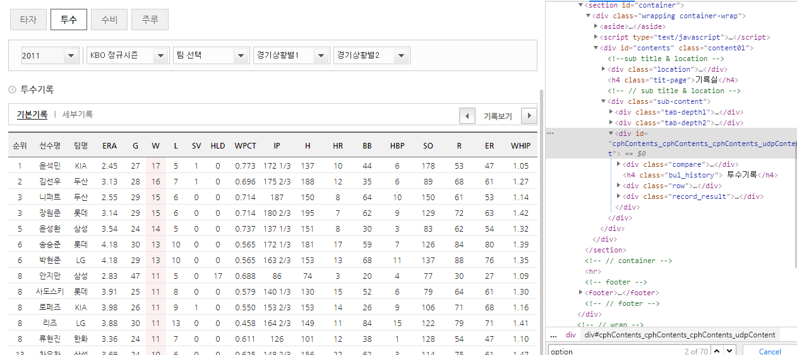

import pandas as pd
외국인역대성적 = pd.read_csv('kbo_yearly_foreigners_2011_2018.csv')
외국인메이저성적 = pd.read_csv('fangraphs_foreigners_2011_2018.csv')
외국인스탯캐스터 = pd.read_csv('baseball_savant_foreigners_2011_2018.csv')
신규외국인성적 = pd.read_csv('fangraphs_foreigners_2019.csv')
신규외국인스텟캐스터 = pd.read_csv('baseball_savant_foreigners_2019.csv')
display(외국인역대성적.head())
print('*'*50)
display(외국인메이저성적.head())
print('*'*50)
display(외국인스탯캐스터.head())
print('*'*50)
display(신규외국인성적.head())
print('*'*50)
display(신규외국인스텟캐스터.head())
print('*'*50)
name = list(set(외국인역대성적['pitcher_name']))
name_dict = {}
for data in name:
name_dict[data] = 0
from urllib.request import urlopen
from bs4 import BeautifulSoup
from urllib.request import urlopen
from urllib.error import HTTPError
from urllib.error import URLError
from selenium import webdriver
import time
path = '../driver/chromedriver.exe'
driver = webdriver.Chrome(path)
driver.get('https://www.koreabaseball.com/Record/Player/PitcherBasic/Basic1.aspx')
page1 = driver.find_elements_by_tag_name('option')
for year in [ i for i in range(2011,2019)]:
page1 = driver.find_elements_by_tag_name('option')
for i in page1:
if i.text == str(year):
print(year)
i.click()
time.sleep(1.5)
page = driver.find_elements_by_css_selector('.tData01')
k = page[0].find_element_by_tag_name('thead').find_element_by_tag_name('tr').find_elements_by_tag_name('th')
k[5].click()
time.sleep(1.5)
page3 = driver.find_elements_by_css_selector('.paging')
for page_num in range(1,6):
page3 = driver.find_elements_by_css_selector('.paging')
page3[0].find_elements_by_tag_name('a')[page_num].click()
time.sleep(1.5)
page2 = driver.find_elements_by_css_selector('.tData01')
a = page2[0].find_element_by_tag_name('tbody').find_elements_by_tag_name('tr')
for idx,value in enumerate(a):
print(value.find_elements_by_tag_name('td')[1].text)

i.click()해서 해당 연도로 넘어가도록 하였다.
k[5].click()를 클릭하여 모든 선수를 볼 수 있도록 한다.

page3[0].find_elements_by_tag_name('a')[page_num].click() 하여 페이지를 넘긴다.
def player_win(year,dic):
driver.get('https://www.koreabaseball.com/Record/Player/PitcherBasic/Basic1.aspx')
page1 = driver.find_elements_by_tag_name('option')
for i in page1:
if i.text == str(year):
print(year)
i.click()
time.sleep(1.5)
page = driver.find_elements_by_css_selector('.tData01')
k = page[0].find_element_by_tag_name('thead').find_element_by_tag_name('tr').find_elements_by_tag_name('th')
k[5].click()
time.sleep(1.5)
page3 = driver.find_elements_by_css_selector('.paging')
for page_num in range(1,6):
page3 = driver.find_elements_by_css_selector('.paging')
page3[0].find_elements_by_tag_name('a')[page_num].click()
time.sleep(1.5)
page2 = driver.find_elements_by_css_selector('.tData01')
a = page2[0].find_element_by_tag_name('tbody').find_elements_by_tag_name('tr')
for idx,value in enumerate(a):
name = value.find_elements_by_tag_name('td')[1].text
for key in list(dic.keys()):
if key == name:
print(name)
dic[key] = [value.find_elements_by_tag_name('td')[5].text, value.find_elements_by_tag_name('td')[6].text]
break
return dic
name_dict_11 = {}
for data in name:
name_dict_11[data] = 0
name_dict_12 = {}
for data in name:
name_dict_12[data] = 0
name_dict_13 = {}
for data in name:
name_dict_13[data] = 0
name_dict_14 = {}
for data in name:
name_dict_14[data] = 0
name_dict_15 = {}
for data in name:
name_dict_15[data] = 0
name_dict_16 = {}
for data in name:
name_dict_16[data] = 0
name_dict_17 = {}
for data in name:
name_dict_17[data] = 0
name_dict_18 = {}
for data in name:
name_dict_18[data] = 0
dic_list = [name_dict_11, name_dict_12,name_dict_13,name_dict_14,name_dict_15,name_dict_16,name_dict_17,name_dict_18]
year_list = [i for i in range(2011,2019) ]
def save(dic_list, year_list):
for dic,year in zip(dic_list, year_list):
print(dic)
dic = player_win(year,dic)
save(dic_list, year_list)
name_dict_18
>
{'후랭코프': [18, 3],
'험버': 0,
'마야': 0,
'레일리': [11, 13],
'팻딘': [6, 7],
'휠러': [3, 9],
'브리검': [11, 7],
'어센시오': 0,
'이브랜드': 0,
'아델만': [8, 12],
'토마스': 0,
'세든': 0,
'린드블럼': [15, 4],
'서캠프': 0,
'윌슨': [9, 4],
'비야누에바': 0,
'에반': 0,
'로저스': [5, 4],
'루카스': 0,
'마리몬': 0,
'헤일': [3, 4],
'해커': [5, 3],
'레나도': 0,
'레온': 0,
'웨버': 0,
'허프': 0,
'웹스터': 0,
'클로이드': 0,
'보우덴': 0,
'스와잭': 0,
'코프랜드': 0,
'피어밴드': [8, 8],
'샘슨': [13, 8],
'피가로': 0,
'앨버스': 0,
'베렛': [6, 10],
'레이예스': 0,
'리즈': 0,
'스틴슨': 0,
'볼스테드': 0,
'플란데': 0,
'올슨': 0,
'맨쉽': 0,
'밴덴헐크': 0,
'보니야': [7, 10],
'지크': 0,
'아담': 0,
'탈보트': 0,
'오간도': 0,
'카스티요': 0,
'피노': 0,
'헥터': [11, 10],
'산체스': [8, 8],
'코엘로': 0,
'소사': [9, 9],
'니퍼트': [8, 8],
'티포드': 0,
'오설리반': 0,
'어윈': 0,
'다이아몬드': 0,
'울프': 0,
'듀브론트': [6, 9]}